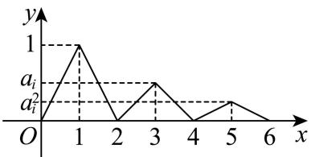

【答案】（1）①不是；②是；
(2) a ≤ 0 a \leq 0 a ≤ 0
(3) 202 5 2 2024 \frac{2025^{2}}{2024} 2024 202 5 2
【解析】
【分析】（1）设 f ( x ) = sin x , x ∈ ( 0 , π 2 ) , s ( x ) = x 2 + 2 x f(x) = \sin x, x \in \left(0, \frac{\pi}{2}\right), s(x) = x^2 + 2x f ( x ) = sin x , x ∈ ( 0 , 2 π ) , s ( x ) = x 2 + 2 x U U U f ( x 1 + x 2 2 ) − f ( x 1 ) + f ( x 2 ) 2 f\left(\frac{x_1 + x_2}{2}\right) - \frac{f(x_1) + f(x_2)}{2} f ( 2 x 1 + x 2 ) − 2 f ( x 1 ) + f ( x 2 ) s ( x 1 ) + s ( x 2 ) 2 − s ( x 1 + x 2 2 ) \frac{s(x_1) + s(x_2)}{2} - s\left(\frac{x_1 + x_2}{2}\right) 2 s ( x 1 ) + s ( x 2 ) − s ( 2 x 1 + x 2 )
（2）设 t ( x ) = x − a x , x ∈ ( 0 , + ∞ ) t(x) = x - \frac{a}{x}, x \in (0, +\infty) t ( x ) = x − x a , x ∈ ( 0 , + ∞ ) t ( x 1 ) + t ( x 2 ) 2 − t ( x 1 + x 2 2 ) ≥ 0 \frac{t(x_1) + t(x_2)}{2} - t\left(\frac{x_1 + x_2}{2}\right) \geq 0 2 t ( x 1 ) + t ( x 2 ) − t ( 2 x 1 + x 2 ) ≥ 0
（3）由题可得 2 n − 2 ≤ x ≤ 2 n − 1 , n ∈ N ∗ 2n - 2 \leq x \leq 2n - 1, n \in \mathbb{N}^* 2 n − 2 ≤ x ≤ 2 n − 1 , n ∈ N ∗ g i ( x ) = a i n − 1 ( x − 2 n + 2 ) g_i(x) = a_i^{n-1}(x - 2n + 2) g i ( x ) = a i n − 1 ( x − 2 n + 2 ) 2 n − 1 < x < 2 n , n ∈ N ∗ 2n - 1 < x < 2n, n \in \mathbb{N}^* 2 n − 1 < x < 2 n , n ∈ N ∗ g i ( x ) = a i n − 1 ( 2 n − x ) g_i(x) = a_i^{n-1}(2n - x) g i ( x ) = a i n − 1 ( 2 n − x ) g i ( x ) g_i(x) g i ( x )
S i = 1 1 − a i S_{i}=\frac{1}{1-a_{i}} S i = 1 − a i 1 h ( x ) = 1 1 − x h(x)=\frac{1}{1-x} h ( x ) = 1 − x 1 x ∈ ( 0 , 1 ) x\in(0,1) x ∈ ( 0 , 1 ) h ( x ) = 1 1 − x h(x)=\frac{1}{1-x} h ( x ) = 1 − x 1 ( 0 , 1 ) (0,1) ( 0 , 1 ) λ 1 = λ 2 = ⋯ = λ 2025 = 1 2025 \lambda_{1}=\lambda_{2}=\cdots=\lambda_{2025}=\frac{1}{2025} λ 1 = λ 2 = ⋯ = λ 2025 = 2025 1
【小问 1 详解】
设 f ( x ) = sin x , x ∈ ( 0 , π 2 ) f(x) = \sin x, x \in \left(0, \frac{\pi}{2}\right) f ( x ) = sin x , x ∈ ( 0 , 2 π ) x 1 , x 2 ∈ ( 0 , π 2 ) x_{1}, x_{2} \in \left(0, \frac{\pi}{2}\right) x 1 , x 2 ∈ ( 0 , 2 π ) f ( x 1 + x 2 2 ) = sin x 1 + x 2 2 f\left(\frac{x_{1} + x_{2}}{2}\right) = \sin \frac{x_{1} + x_{2}}{2} f ( 2 x 1 + x 2 ) = sin 2 x 1 + x 2 f ( x 1 ) + f ( x 2 ) 2 = 1 2 ( sin x 1 + sin x 2 ) = 1 2 × 2 sin x 1 + x 2 2 cos x 1 − x 2 2 = sin x 1 + x 2 2 cos x 1 − x 2 2 \frac{f(x_{1}) + f(x_{2})}{2} = \frac{1}{2} (\sin x_{1} + \sin x_{2}) = \frac{1}{2} \times 2 \sin \frac{x_{1} + x_{2}}{2} \cos \frac{x_{1} - x_{2}}{2} = \sin \frac{x_{1} + x_{2}}{2} \cos \frac{x_{1} - x_{2}}{2} 2 f ( x 1 ) + f ( x 2 ) = 2 1 ( sin x 1 + sin x 2 ) = 2 1 × 2 sin 2 x 1 + x 2 cos 2 x 1 − x 2 = sin 2 x 1 + x 2 cos 2 x 1 − x 2
f ( x 1 + x 2 2 ) − f ( x 1 ) + f ( x 2 ) 2 = sin x 1 + x 2 2 ( 1 − cos x 1 − x 2 2 )
f \left(\frac {x _ {1} + x _ {2}}{2}\right) - \frac {f (x _ {1}) + f (x _ {2})}{2} = \sin \frac {x _ {1} + x _ {2}}{2} \left(1 - \cos \frac {x _ {1} - x _ {2}}{2}\right)
f ( 2 x 1 + x 2 ) − 2 f ( x 1 ) + f ( x 2 ) = sin 2 x 1 + x 2 ( 1 − cos 2 x 1 − x 2 )
因 x 1 , x 2 ∈ ( 0 , π 2 ) x_{1}, x_{2} \in \left(0, \frac{\pi}{2}\right) x 1 , x 2 ∈ ( 0 , 2 π ) x 1 + x 2 2 ∈ ( 0 , π 2 ) , x 1 − x 2 2 ∈ ( − π 4 , π 4 ) \frac{x_{1} + x_{2}}{2} \in \left(0, \frac{\pi}{2}\right), \frac{x_{1} - x_{2}}{2} \in \left(-\frac{\pi}{4}, \frac{\pi}{4}\right) 2 x 1 + x 2 ∈ ( 0 , 2 π ) , 2 x 1 − x 2 ∈ ( − 4 π , 4 π )
从而 sin x 1 + x 2 2 > 0 \sin \frac{x_1 + x_2}{2} > 0 sin 2 x 1 + x 2 > 0 cos x 1 − x 2 2 ∈ ( 2 2 , 1 ] \cos \frac{x_1 - x_2}{2} \in \left(\frac{\sqrt{2}}{2}, 1\right] cos 2 x 1 − x 2 ∈ ( 2 2 , 1 ] sin x 1 + x 2 2 ( 1 − cos x 1 − x 2 2 ) ≥ 0 \sin \frac{x_1 + x_2}{2} \left(1 - \cos \frac{x_1 - x_2}{2}\right) \geq 0 sin 2 x 1 + x 2 ( 1 − cos 2 x 1 − x 2 ) ≥ 0
即 f ( x 1 + x 2 2 ) ≥ f ( x 1 ) + f ( x 2 ) 2 f\left(\frac{x_1 + x_2}{2}\right) \geq \frac{f(x_1) + f(x_2)}{2} f ( 2 x 1 + x 2 ) ≥ 2 f ( x 1 ) + f ( x 2 ) x 1 = x 2 x_1 = x_2 x 1 = x 2
则 y = sin x , x ∈ ( 0 , π 2 ) y = \sin x, \quad x \in \left(0, \frac{\pi}{2}\right) y = sin x , x ∈ ( 0 , 2 π )
设 s ( x ) = x 2 + 2 x s(x) = x^2 + 2x s ( x ) = x 2 + 2 x x 1 , x 2 ∈ R x_1, x_2 \in \mathbb{R} x 1 , x 2 ∈ R
s ( x 1 + x 2 2 ) = ( x 1 + x 2 2 ) 2 + x 1 + x 2 , s ( x 1 ) + s ( x 2 ) 2 = x 1 2 + x 2 2 2 + x 1 + x 2 ,
s \left(\frac {x _ {1} + x _ {2}}{2}\right) = \left(\frac {x _ {1} + x _ {2}}{2}\right) ^ {2} + x _ {1} + x _ {2}, \quad \frac {s (x _ {1}) + s (x _ {2})}{2} = \frac {x _ {1} ^ {2} + x _ {2} ^ {2}}{2} + x _ {1} + x _ {2},
s ( 2 x 1 + x 2 ) = ( 2 x 1 + x 2 ) 2 + x 1 + x 2 , 2 s ( x 1 ) + s ( x 2 ) = 2 x 1 2 + x 2 2 + x 1 + x 2 ,
s ( x 1 ) + s ( x 2 ) 2 − s ( x 1 + x 2 2 ) = x 1 2 + x 2 2 2 − x 1 2 + x 2 2 + 2 x 1 x 2 4 = ( x 1 − x 2 ) 2 4 ≥ 0 ,
\frac {s \left(x _ {1}\right) + s \left(x _ {2}\right)}{2} - s \left(\frac {x _ {1} + x _ {2}}{2}\right) = \frac {x _ {1} ^ {2} + x _ {2} ^ {2}}{2} - \frac {x _ {1} ^ {2} + x _ {2} ^ {2} + 2 x _ {1} x _ {2}}{4} = \frac {\left(x _ {1} - x _ {2}\right) ^ {2}}{4} \geq 0,
2 s ( x 1 ) + s ( x 2 ) − s ( 2 x 1 + x 2 ) = 2 x 1 2 + x 2 2 − 4 x 1 2 + x 2 2 + 2 x 1 x 2 = 4 ( x 1 − x 2 ) 2 ≥ 0 ,
当且仅当 x 1 = x 2 x_{1} = x_{2} x 1 = x 2 y = x 2 + 2 x y = x^{2} + 2x y = x 2 + 2 x U U U
【小问 2 详解】
设 t ( x ) = x − a x t(x) = x - \frac{a}{x} t ( x ) = x − x a x ∈ ( 0 , + ∞ ) x \in (0, +\infty) x ∈ ( 0 , + ∞ ) y = x − a x y = x - \frac{a}{x} y = x − x a ( 0 , + ∞ ) (0, +\infty) ( 0 , + ∞ ) U U U
∀ x 1 , x 2 ∈ ( 0 , + ∞ ) , t ( x 1 ) + t ( x 2 ) 2 − t ( x 1 + x 2 2 ) ≥ 0 ⇒ a ( 2 x 1 + x 2 − x 1 + x 2 2 x 1 x 2 ) ≥ 0 ,
\forall x _ {1}, x _ {2} \in (0,+\infty), \frac {t \left(x _ {1}\right) + t \left(x _ {2}\right)}{2} - t \left(\frac {x _ {1} + x _ {2}}{2}\right) \geq 0 \Rightarrow a \left(\frac {2}{x _ {1} + x _ {2}} - \frac {x _ {1} + x _ {2}}{2 x _ {1} x _ {2}}\right) \geq 0,
∀ x 1 , x 2 ∈ ( 0 , + ∞ ) , 2 t ( x 1 ) + t ( x 2 ) − t ( 2 x 1 + x 2 ) ≥ 0 ⇒ a ( x 1 + x 2 2 − 2 x 1 x 2 x 1 + x 2 ) ≥ 0 ,
注意到 2 x 1 + x 2 − x 1 + x 2 2 x 1 x 2 = 4 x 1 x 2 − ( x 1 + x 2 ) 2 2 x 1 x 2 ( x 1 + x 2 ) = − ( x 1 − x 2 ) 2 2 x 1 x 2 ( x 1 + x 2 ) ≤ 0 \frac{2}{x_1 + x_2} -\frac{x_1 + x_2}{2x_1x_2} = \frac{4x_1x_2 - (x_1 + x_2)^2}{2x_1x_2(x_1 + x_2)} = \frac{-(x_1 - x_2)^2}{2x_1x_2(x_1 + x_2)}\leq 0 x 1 + x 2 2 − 2 x 1 x 2 x 1 + x 2 = 2 x 1 x 2 ( x 1 + x 2 ) 4 x 1 x 2 − ( x 1 + x 2 ) 2 = 2 x 1 x 2 ( x 1 + x 2 ) − ( x 1 − x 2 ) 2 ≤ 0 a ≤ 0 a\leq 0 a ≤ 0
【小问 3 详解】
由题可得 g i ( x ) = { x , 0 ≤ x ≤ 1 2 − x , 1 < x < 2 g_{i}(x)=\left\{\begin{aligned}x,0&\leq x\leq1\\ 2-x,1&<x<2\end{aligned}\right. g i ( x ) = { x , 0 2 − x , 1 ≤ x ≤ 1 < x < 2
当 2 ≤ x ≤ 3 2 \leq x \leq 3 2 ≤ x ≤ 3 0 ≤ x − 2 ≤ 1 0 \leq x - 2 \leq 1 0 ≤ x − 2 ≤ 1 g i ( x ) = a i g i ( x − 2 ) = a i ( x − 2 ) g_{i}(x) = a_{i} g_{i}(x - 2) = a_{i}(x - 2) g i ( x ) = a i g i ( x − 2 ) = a i ( x − 2 )
当 3 < x < 4 3 < x < 4 3 < x < 4 1 < x − 2 < 2 1 < x - 2 < 2 1 < x − 2 < 2 g i ( x ) = a i g ( x − 2 ) = a i [ 2 − ( x − 2 ) ] = a i ( 4 − x ) g_{i}(x) = a_{i}g(x - 2) = a_{i}[2 - (x - 2)] = a_{i}(4 - x) g i ( x ) = a i g ( x − 2 ) = a i [ 2 − ( x − 2 )] = a i ( 4 − x )
当 4 ≤ x ≤ 5 4 \leq x \leq 5 4 ≤ x ≤ 5 2 ≤ x − 2 ≤ 3 2 \leq x - 2 \leq 3 2 ≤ x − 2 ≤ 3 g i ( x ) = a i g i ( x − 2 ) = a i 2 ( x − 4 ) g_{i}(x) = a_{i} g_{i}(x - 2) = a_{i}^{2}(x - 4) g i ( x ) = a i g i ( x − 2 ) = a i 2 ( x − 4 )
当 5 < x < 6 5 < x < 6 5 < x < 6 3 < x − 2 < 4 3 < x - 2 < 4 3 < x − 2 < 4 g i ( x ) = a i g ( x − 2 ) = a i 2 [ 4 − ( x − 2 ) ] = a i 2 ( 6 − x ) g_{i}(x) = a_{i}g(x - 2) = a_{i}^{2}[4 - (x - 2)] = a_{i}^{2}(6 - x) g i ( x ) = a i g ( x − 2 ) = a i 2 [ 4 − ( x − 2 )] = a i 2 ( 6 − x )
依次类推可得： 2 n − 2 ≤ x ≤ 2 n − 1 , n ∈ N ∗ , g i ( x ) = a i n − 1 ( x − 2 n + 2 ) 2n-2\leq x\leq2n-1,\quad n\in\mathbb{N}^{*},\quad g_{i}(x)=a_{i}^{n-1}(x-2n+2) 2 n − 2 ≤ x ≤ 2 n − 1 , n ∈ N ∗ , g i ( x ) = a i n − 1 ( x − 2 n + 2 )
2 n − 1 < x < 2 n , n ∈ N ∗ , g i ( x ) = a i n − 1 ( 2 n − x ) . 2n - 1 < x < 2n, n \in \mathbf{N}^{*}, g_{i}(x) = a_{i}^{n - 1}(2n - x). 2 n − 1 < x < 2 n , n ∈ N ∗ , g i ( x ) = a i n − 1 ( 2 n − x ) .
据此可得 g i ( x ) g_{i}(x) g i ( x )
S i = 1 2 × 2 × ( 1 + a i + a i 2 + ⋯ + a i n + … ) = lim n → + ∞ 1 − a i n 1 − a i = 1 1 − a i ,
S _ {i} = \frac {1}{2} \times 2 \times \left(1 + a _ {i} + a _ {i} ^ {2} + \dots + a _ {i} ^ {n} + \dots\right) = \lim _ {n \rightarrow + \infty} \frac {1 - a _ {i} ^ {n}}{1 - a _ {i}} = \frac {1}{1 - a _ {i}},
S i = 2 1 × 2 × ( 1 + a i + a i 2 + ⋯ + a i n + … ) = n → + ∞ lim 1 − a i 1 − a i n = 1 − a i 1 ,
则 ∑ i = 1 2025 S i = ∑ i = 1 2025 1 1 − a i \sum_{i=1}^{2025} S_i = \sum_{i=1}^{2025} \frac{1}{1 - a_i} ∑ i = 1 2025 S i = ∑ i = 1 2025 1 − a i 1
设 h ( x ) = 1 1 − x , x ∈ ( 0 , 1 ) h(x) = \frac{1}{1 - x}, x \in (0,1) h ( x ) = 1 − x 1 , x ∈ ( 0 , 1 ) ∑ i = 1 2025 S i = ∑ i = 1 2025 h ( a i ) \sum_{i=1}^{2025} S_i = \sum_{i=1}^{2025} h(a_i) ∑ i = 1 2025 S i = ∑ i = 1 2025 h ( a i )
取 ∀ x 1 , x 2 ∈ ( 0 , 1 ) \forall x_{1},\quad x_{2}\in(0,1) ∀ x 1 , x 2 ∈ ( 0 , 1 )
h ( x 1 ) + h ( x 2 ) 2 − h ( x 1 + x 2 2 ) = 2 − ( x 1 + x 2 ) 2 ( 1 − x 1 ) ( 1 − x 2 ) − 2 2 − ( x 1 + x 2 )
\frac {h \left(x _ {1}\right) + h \left(x _ {2}\right)}{2} - h \left(\frac {x _ {1} + x _ {2}}{2}\right) = \frac {2 - \left(x _ {1} + x _ {2}\right)}{2 \left(1 - x _ {1}\right) \left(1 - x _ {2}\right)} - \frac {2}{2 - \left(x _ {1} + x _ {2}\right)}
2 h ( x 1 ) + h ( x 2 ) − h ( 2 x 1 + x 2 ) = 2 ( 1 − x 1 ) ( 1 − x 2 ) 2 − ( x 1 + x 2 ) − 2 − ( x 1 + x 2 ) 2
= [ 2 − ( x 1 + x 2 ) ] 2 − 4 ( 1 − x 1 ) ( 1 − x 2 ) 2 ( 1 − x 1 ) ( 1 − x 2 ) [ 2 − ( x 1 + x 2 ) ] = ( x 1 − x 2 ) 2 2 ( 1 − x 1 ) ( 1 − x 2 ) [ 2 − ( x 1 + x 2 ) ]
= \frac {\left[ 2 - \left(x _ {1} + x _ {2}\right) \right] ^ {2} - 4 \left(1 - x _ {1}\right) \left(1 - x _ {2}\right)}{2 \left(1 - x _ {1}\right) \left(1 - x _ {2}\right) \left[ 2 - \left(x _ {1} + x _ {2}\right) \right]} = \frac {\left(x _ {1} - x _ {2}\right) ^ {2}}{2 \left(1 - x _ {1}\right) \left(1 - x _ {2}\right) \left[ 2 - \left(x _ {1} + x _ {2}\right) \right]}
= 2 ( 1 − x 1 ) ( 1 − x 2 ) [ 2 − ( x 1 + x 2 ) ] [ 2 − ( x 1 + x 2 ) ] 2 − 4 ( 1 − x 1 ) ( 1 − x 2 ) = 2 ( 1 − x 1 ) ( 1 − x 2 ) [ 2 − ( x 1 + x 2 ) ] ( x 1 − x 2 ) 2
因 x 1 , x 2 ∈ ( 0 , 1 ) x_{1}, x_{2} \in (0,1) x 1 , x 2 ∈ ( 0 , 1 ) 1 − x 1 > 0 1 - x_{1} > 0 1 − x 1 > 0 1 − x 2 > 0 1 - x_{2} > 0 1 − x 2 > 0 2 − ( x 1 + x 2 ) > 0 2 - (x_{1} + x_{2}) > 0 2 − ( x 1 + x 2 ) > 0
2 ( 1 − x 1 ) ( 1 − x 2 ) [ 2 − ( x 1 + x 2 ) ] > 0 2(1-x_{1})(1-x_{2})\left[2-(x_{1}+x_{2})\right]>0 2 ( 1 − x 1 ) ( 1 − x 2 ) [ 2 − ( x 1 + x 2 ) ] > 0 h ( x 1 ) + h ( x 2 ) 2 ≥ h ( x 1 + x 2 2 ) \frac{h(x_{1})+h(x_{2})}{2}\geq h\left(\frac{x_{1}+x_{2}}{2}\right) 2 h ( x 1 ) + h ( x 2 ) ≥ h ( 2 x 1 + x 2 )
即 h ( x ) = 1 1 − x h(x)=\frac{1}{1-x} h ( x ) = 1 − x 1 ( 0 , 1 ) (0,1) ( 0 , 1 )
由题干提供信息可得：取 λ 1 = λ 2 = ⋯ = λ 2025 = 1 2025 \lambda_{1}=\lambda_{2}=\cdots=\lambda_{2025}=\frac{1}{2025} λ 1 = λ 2 = ⋯ = λ 2025 = 2025 1
1 2025 ∑ i = 1 2025 h ( a i ) ≥ h ( 1 2025 ∑ i = 1 2025 a i ) ⇒
\frac {1}{2 0 2 5} \sum_ {i = 1} ^ {2 0 2 5} h \left(a _ {i}\right) \geq h \left(\frac {1}{2 0 2 5} \sum_ {i = 1} ^ {2 0 2 5} a _ {i}\right) \Rightarrow
2025 1 i = 1 ∑ 2025 h ( a i ) ≥ h ( 2025 1 i = 1 ∑ 2025 a i ) ⇒
∑ i = 1 2025 S i = ∑ i = 1 2025 h ( a i ) ≥ 2025 × h ( 1 2025 ) = 2025 × 1 1 − 1 2025 = 202 5 2 2024
\sum_ {i = 1} ^ {2 0 2 5} S _ {i} = \sum_ {i = 1} ^ {2 0 2 5} h \left(a _ {i}\right) \geq 2 0 2 5 \times h \left(\frac {1}{2 0 2 5}\right) = 2 0 2 5 \times \frac {1}{1 - \frac {1}{2 0 2 5}} = \frac {2 0 2 5 ^ {2}}{2 0 2 4}
i = 1 ∑ 2025 S i = i = 1 ∑ 2025 h ( a i ) ≥ 2025 × h ( 2025 1 ) = 2025 × 1 − 2025 1 1 = 2024 202 5 2
当且仅当 a 1 = a 2 = ⋯ = a 2025 = 1 2025 a_1=a_2=\cdots=a_{2025}=\frac1{2025} a 1 = a 2 = ⋯ = a 2025 = 2025 1
